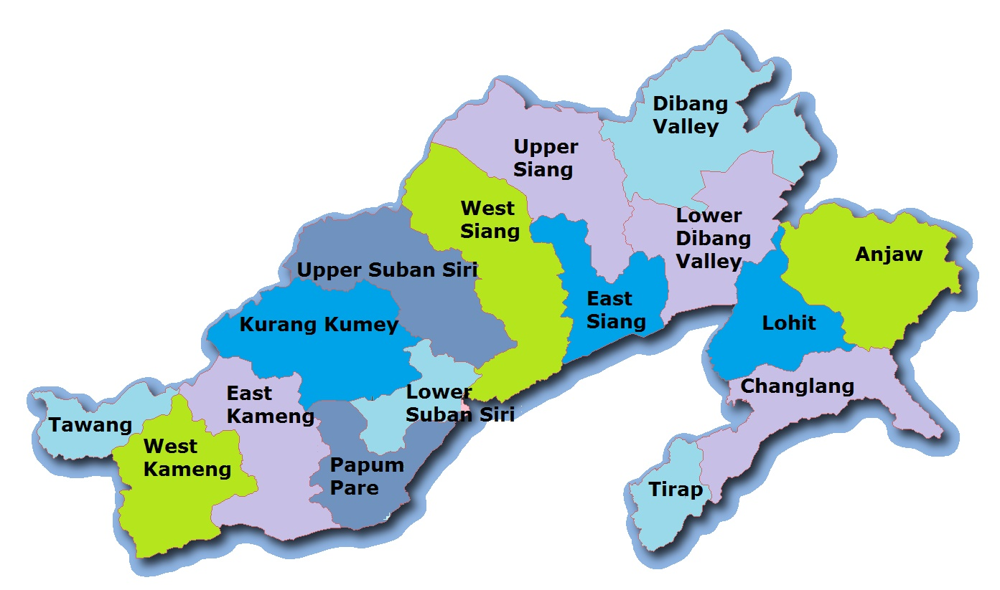

>LET'S HAVE A LOOK AT THE TOUR MAP
>WHERE TO VISIT , WHAT TO SEE?
SOME HOT PICKS(#HAVE_TO_VISIT)
- TAWANG - BEAUTIFUL MONASTERIES AND THE BIRTHPLACE OF DALAI LAMA
- ZIRO - OF-BEAT DESTINATION HOME TO THE APA TANI TRIBE FAMOUS FOR THE PINE HILLS
- BHALUKPONG - NATURE LOVER'S PARADISE AND ADVENTURE SPOT
- ROING - SNOW PEAKED MOUNTAINS AND TURBULENT RIVERS CASCADING DOWN THE HILLS
- ITANAGAR - WITH THE BRAHMAPUTRA RIVER FLOWING ALONGSIDE THIS PLACE IS A NATURE'S PARADISE
- ANINI - GREEN VELVET COVERED PLAINS
- BOMDILLA - BEAUTIFUL HILLY VALEYS
- TIRAP - LUSTROUS RIVULETS WITH GREEN AND VIBRANT ORCHIDS
- NURANANG FALLS - LARGELY UNKWON AND VIRGIN PLACE,OFFERING A PRISTINE AND BEAUTIFUL EXPERIENCE
- MADHURI LAKE ROCKY MOUNTAINS AND AN EVER PRESENT LAKE
SOME_OTHER_ATTRACTIONS
- PASIGHAT
- ALONG - MECHUKA VALLEY WITH PLANTATION SITE
- DAPORIJO
- KHONSA - DENSE FORESTS AND DEEP GORGES
- CHANGLANG - SHARES INTERNATIONAL BOUNDARY WITH MYANMAR
- YINGKIONG - RIVER SIANG FLOWS BESIDES THIS DISTRICT
- YUPIA
- SELA PASS - HEAVENLY GATEWAY
- MECHUKA